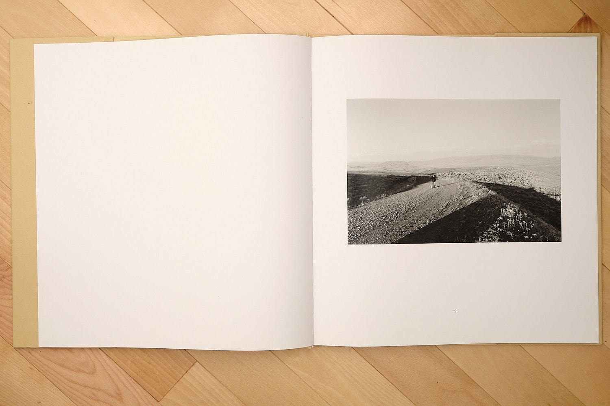
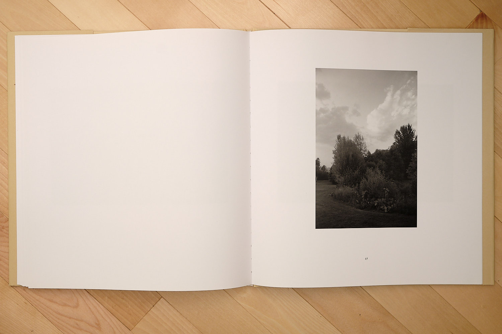

Robert Adams is rarely loud, but Pine Valley is surprisingly quiet. It's doubtful anyone would call it his magnum opus, a title that surely belongs to his pictures from the 1970s and 80s, to The New West or Los Angeles Spring. That period of work defined his career, let alone a genre. Pine Valley would be published decades later in 2005.
In his usual fashion, the book shares a place Adams found and came to love. He recalls in a brief forward: “The Valley is located next to Oregon's high desert. Most of the pines for which it was named have been cut, but it is still an oasis.”1

A slim, 34-photo book, Pine Valley, can be dismissed easily, especially considering a second book Adams published the same year, Turning Back. Turning Back is also an examination of clear-cutting in Oregon but takes a much less subtle approach to the subject. It has been called Adams' most angry and politically charged series.2 It shows clearly the vast destruction taking place in the Oregon landscape. Pine Valley, in contrast, is all beauty. That Adams chose to publish such an intense book next to such a quiet one is fascinating.

I have not looked at a physical copy of Turning Back. In fact, Pine Valley is the only book of Adams' pictures I own. That tragedy will no doubt change soon,3 but in all his catalog, it's the book that drew me in first. I had an overwhelming response to the preview images, a feeling I'm sure many photographers can relate to. We fall in love with images just as much as we fall in love with our subjects, perhaps more.
The book opens with light and with love.
Adams shows us three pictures with obvious beauty: two of rainbows over scrubland and one of his wife Kerstin and their dog (a common site in Adams' later work). A walk is started, leading down from the scrub into the titular valley.
From there, Adams gets into what Alec Soth might call “difficult” pictures. Pictures of mundane, slow-to-love subjects. A page turn goes from rainbow to harsh midday sun beating down on nothing more than trees. Spreads now get two-pictures a piece, usually of the same scene shifted slightly.

Adams asks the viewer to stare, to glance from left to right and right to left. To form a path the walker might take to get from one picture to it's companion. A common technique, but Adams uses it in a unique way. Spreads don't connect; they jump from one vignette to another, much like a standard sequence. Because of this combination, Pine Valley achieves both a standard pace and a walking pace with rare dexterity.

Compositionally, trees explode out of frame. Harsh light blooms chaos. The viewer is engulfed and drawn closer to see every leaf, every branch. Branch tips run right through picture edges as if to say Adams failed to contain it all.

Adams draws closer and closer, eventually framing only groups of branches. Even more so, the viewer is asked to pause and to take it in.

Then, as quickly as it started, the chaos ends. The light softens, Adams pulls back, and the viewer is greeted by evening. The walk is winding down.
The light fades more, trees are now only silhouettes, and Pine Valley closes with stars.
Pine Valley was the first photobook to make me cry.4

*
NOTES
1. Source: Robert Adams, Pine Valley, Nazraeli Press, 2005
2. Source: Bob Keyes, “Turning Back examines, through photography, the loss of the wild and mankind’s role”, Portland Press Herald, 2016
3. This problem was fixed a week or so after writing this piece.
4. This article was originally shared through Vessel Editions, that copy can be found at vesseleditions.com/243428331774/roberts-adams-pine-valley.
*